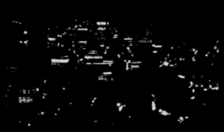
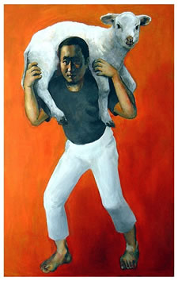
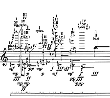
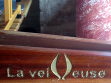
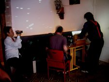
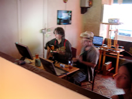
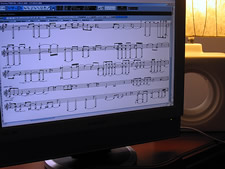
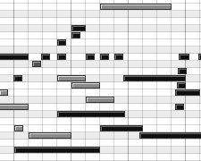

http://www.harsmedia.com/SoundBlog/Archief/00640.php
Mind: the gap (Hommage à Nam Jun Paik)
july 23, 2008.
The picture below shows a still from a video of Seoul by night, shot some time ago by the Korean artist Dae Lee (이대일), who chose Daily< for his (western) artist name. (* )

I don't know from where Daily thus filmed Seoul, but it must have been from some spot far, from somewhere high...
When visiting Paris this june as part of his european Sound Cityscape (Hommage a Nam Jun Paik) tour, he went up to the terrace on the top floor of the Tour Montparnasse, which - at the time of this writing still - is the highest skyscraper, and the second highest structure in the french capital, surpassed in height only by the Eiffel tower. There, in the short span between sunset and the daily closing of the terrace, Daily made the tour of the Montparnasse tower. He filmed a panoramic night view of Paris that looks a lot like that of Seoul.
But of course it was also a lot different.

Nightly city views are much like night sky pictures. To almost everyone's eye one will look just like the other: clusters of dots of varying luminosity randomly distributed over a dark background. Maybe some trained astronomer's eye would be able to tell at a mere glance from where on earth and when the picture was taken, but I suspect that even a trained night sky gazer would hurry to consult some guide or catalogue of stellar constellations in order to verify her educated guess.
I imagine a similar guide to 'city night view constellations', which, given a point of view and a distance, would enable one to distinguish and determine the 'luminous systems' making up our cities' galaxies, composed as they are from variously tilted planes, covered by series of lighted squares and rectangles: the sides of apartment blocks, of high rise office buildings, gathered in smaller and larger groups, that one might maybe even imagine to move in orbit one around the other, like stellar systems do ...
For several of his works (** ) John Cage created very detailed and highly complex scores based upon the pointillist patterns presented by a number of different star charts. These 'found patterns' were crafted into rigorously western musical notation, with assistance from the I Ching, which the composer consulted in order to help him choose between the many possible alternatives that he found himself confronted with. For instance, given a series of 'star notes', should they be played as individual notes, or should they become one single aggregate? In what octave should some given 'star note' be placed, and need it eventually be played by the piano player's right or by her left hand ? Et cetera. In addition, "for chords," James Pritchett notes in his (online available) articleon the Freeman etudes for violin solo, "Cage used the star tracings to determine the first pitch, but subsequent pitches were the result of questions asked of the violinist Paul Zukofsky."

Cage's 'star music' is extremely demanding on its players. Performing it takes a lot of practice. It was meant to be that way. Cage himself was long time convinced that the Freeman etudes were unplayable. Until a young virtuoso, Irvine Arditti, proved him wrong, not only by playing these etudes faithful to the letter, but also - in true athlete's spirit - subsequently continuing to do so while increasing the tempo, playing them ever faster and faster ... It goes almost without saying that Arditti practiced a lot ...
The score is of little help in understanding the pieces, writes Pritchett. "It is nothing but details, [...] dense knots of notes with [an] impossible number of qualifications."
In an often quoted interview from 1983, Cage reflects upon the extreme complexity and 'impossibility' of his Freeman etudes as a metaphor for the sheer hopelessness so often experienced in face of the entanglement and multi-faceted complexity of problems in 'real life'. "[W]e tend to think that the situation is hopeless and that it's just impossible to do something that will make everything turn out properly. [ ] I think that this music, which is almost impossible, gives an instance of the practicality of the impossible." (*** )
  
On his european Hommage à Nam Jun Paik tour, Daily used the night views that he filmed in the cities through which he passed as the source material for musical scores. Along the way he invited local musicians to perform them.
Live.
In Berlin, Daily met Rinus van Alebeek, who encouraged him to do an impromptu field recordings set there, at Das Kleine, and then sent him on to Paris, to team up with the Ana-Rchamber orchestra, that thus quite suddenly sprung into existence. Thanks foremost to the inspiring enthusiasm and boundless energy of Rébus, in the week of june 22, Paris had two occasions to see and hear Daily's 'Sound Cityscapes'.
We did six of them, divided over two separate evenings.
On sunday june 22nd, in the tiny but adorable La Veilleuse(26, rue des Envierges - Paris XX), we interpreted Daily's city scores twice as a duo, and once as a trio (**** ). The views performed were : La Défense - duo with Rébus on flute, and Har$ on toy piano; Tour Montparnasse - duo with Anthony Carcone on ukulele, and Har$ on guitar; Place d'Italie - trio with Anthony Carcone on guitar, Rébus on melodica and Har$ on toy piano and Casio keyboard.
At the end of the week, on friday june 27th, Daily confronted us with modified versions of two of the views already presented at la Veilleuse, and one new one, in Han-Seine, an espace culturelle Franco-Coréen in the rue Monsieur le Prince, Paris VI.
 
The views performed in the Espace Han-Seine were: La Défense - piano solo by Yoko Miura
; Place Royale - duo with Jean Bordé on double bass and Yoko Miura on piano; Tour Montparnasse - trio with Yoko Miura on toy piano, Jean Bordé on double bass and Har$ on piano.
How did Daily arrive at the interpretation of his city night views as musical scores? Have another look at the picture of Seoul by night at the beginning of this article. You see the dots, see the lines ...? Those patterns are not unlike the patterns of holes in the paper of a book for a mechanical organ. Or, probably more familiar to most viewers, they are like the patterns that form the graphical rendering of a midi
-file. which, of course, basically, is the same thing (see picture) ...
Now think of some software that takes as an input such a video made at night, in a city or elsewhere. The software divides the video in a series of successive screens, scans those screens, and translates the black-grey-white patterns into a global midi score, with the user given the possibility to adjust the interpretation, depending on the characteristics of a given video.
Next the user may indicate what number of, and what instruments, he wants to use for the playing back of the midi-file. Finally, obviously almost any midi-software will be able to play it, using whatever midi-instruments are available ... Or, alternatively, the user/composer might render the graphical representation as a traditional musical score (see the picture above), eventually by hand adjust this, and then hand the parts to instrumentalists. These then may practice the piece, and eventually perform it.
Of course much of the interest of whatever transformation from picture to music will reside in precisely how the software (in the broadest possible sense of the word) will perform the transition across these main two gaps: from picture to midi, from midi to music.
What, all things said, all things done, for me made Daily's Sound Cityscapes in Paris so fascinating, is not the mere fact that some pretty much abstract pictures are 'made to sound', but the fact that in order to bridge both of the gaps, he used 'human software': he used his and our mind.
In order to obtain a graphical midi-representation of the videos he made, it was Daily himself who divided the video into a sequence of subsequent screens. Then he copied, painted really, by hand, each of the screens into a graphical midi-editor, and divided the graphical 'abstraction' of the video thus obtained into as many seperata parts (layers) as there would be musicians performing that particular 'cityscape' ...
Next, in order to play the compositions, instead of using whatever software available on his laptop, Daily invited real flesh and blood musicians to perform the files. Even more so, they were actually asked to perform almost as if they were such a software: in real time. Apart from a little test beforehand, there were no rehearsals. Each of the Sound Cityscapes was played once, and only once, with the musicians' eyes following and interpreting the midi patterns that scrolled by along a computer screen, while the audience watched a projection of the corresponding video.
A parisian night view appeared, and a midi graph began scrolling along the musicians' screens. We sat there struggling with the lines and dots that came streaming by, as bits and pieces of wood floating on a river, always at the same steady pace. It was pretty intense, really, trying to keep up with that stream of lines and dots, without ever being able to go back and correct, as it just kept going, and one never knew what would come next ... until then suddenly - and it was always earlier than expected - it just stopped ...
The music was as ephemeral as that. As ephemeral as the nightly view of a city from within an airplane flying overhead. As ephemeral as the view of Paris from within a car that is speeding along its ring way. As ephemeral as you glancing over the city from the top floor of the Centre Pompidou, before taking the escalator down again.
I think that none of us ever before played or heard something as ephemeral before.
It therefore was quite an experience, actually.
[ To give you an impression,
this SB entry's podcastconsists in two extracts from the duets that we played at la Veilleuse, on sunday june 22nd ... ]
After friday's concert at the Espace Han-Seine we sat all together on the steps of the nearby Odéon theatre
. We drank beers, had some tasty slices of pizza, and talked ... "Why then," we asked Daily, "do you present your Sound Cityscapes as an 'Hommage à Nam Jun Paik' ...?"
"Nam Jun Paik was born in Korea, like me," Daily told us. "He was a trained classical pianist, and graduated from Tokyo University, where he wrote a thesis on Arnold Schönberg. Like me, he then moved to Germany to continue his studies. It was in the Germany of the late 1950s, early 1960s, and he realized that as a musician, as a composer, he would never be able to compete with the 'big guys', that he would never be like, a Stockhausen, a Boulez, a Cage, who gathered there every year for the Darmstädter Ferienkurse, and made the law on what music should be about. So he decided one time, when John Cage was around, to organize a concert that he called: "Hommage to John Cage". As could be expected, John Cage attended the event ... During that concert he made a whole lot of mess, a lot of noise on the piano. He jumped into the audience, cut of John Cage's tie with a pair of scissors, and covered his hair with shampoo. Then he ran out of the place where the concert took place, and from a phone booth somewhere nearby called up, to announce to the audience that the concert was finished ..." (***** )
Meanwhile evening fell over Paris and the Place d'Odéon. For some mysterious reason the handy in my pocket was switched into tv-mode, and when I wanted to check the time, I looked into the tiny smiling face of a french talkies-host.
Around us bright city lights had begun shining.
All became crystal clear, clear as shine ... right as rain ...
notes __ ::
(*) For some facts on Dae Lee (Daily), have a look at his web site: I'm Daily
... [^ ]
(**) Cage's compositions that are based upon some sort of transcription from star charts include his Atlas Eclipticalis (1961-62), for 86 instruments, Etudes Australes
(1974-75), for piano solo, the Freeman Etudes
(1977-90), for violin solo, and the Etudes Boreales
, for cello and/or piano ... [^ ]
(***) Quoted in James Pritchett - "John Cage: Freeman Etudes"
(1994) ... [^ ]
(****) Trio, as for some reason still unbeknownst to me, our banjo (or was it mandoline?) player failed to turn up at la Veilleuse ... [^ ]
(*****) The story of Nam June Paik cutting John Cage's tie and shampooing his hair during a concert or performance somewhere in Germany can be found at a great many places. Most accounts though differ greatly with respect to the when, the where, the what and with respect to other verifiable contextual details. I guess that makes this story into a veritable fluxus myth ... [^ ]e Freeman Etudes
(1977-90), for violin solo, and the Etudes Boreales
, for cello and/or piano ... [^ ]
(***) Quoted in James Pritchett - "John Cage: Freeman Etudes"
(1994) ... [^ ]
(****) Trio, as for some reason still unbeknownst to me, our banjo (or was it mandoline?) player failed to turn up at la Veilleuse ... [^ ]
(*****) The story of Nam June Paik cutting John Cage's tie and shampooing his hair during a concert or performance somewhere in Germany can be found at a great many places. Most accounts though differ greatly with respect to the when, the where, the what and with respect to other verifiable contextual details. I guess that makes this story into a veritable fluxus myth ... [^ ]
2008-07-24
saptap.egloos.com 에서 옮김